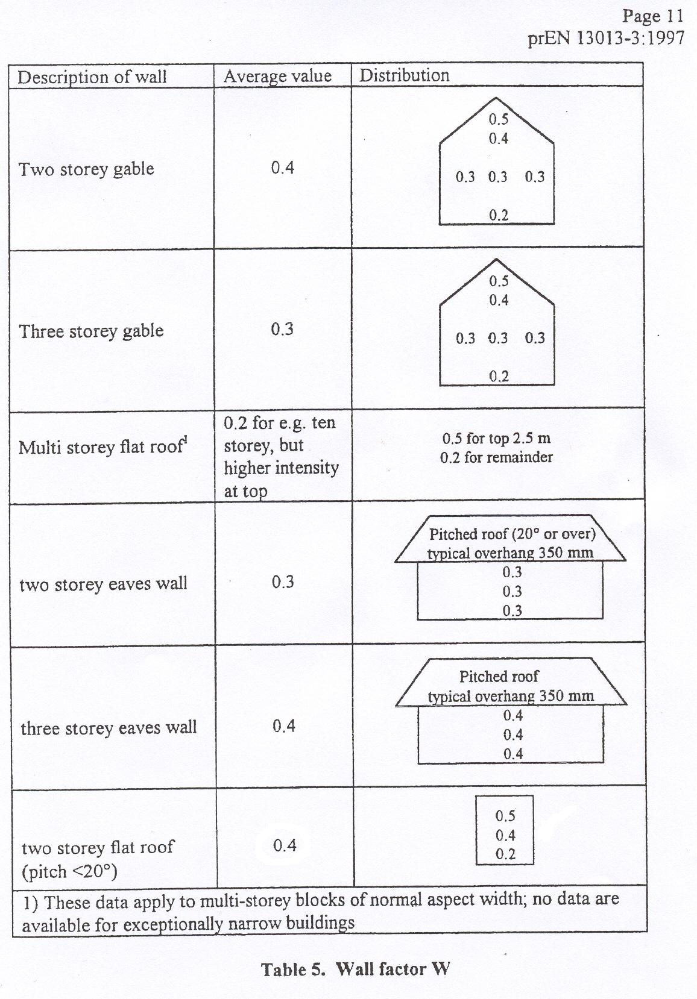
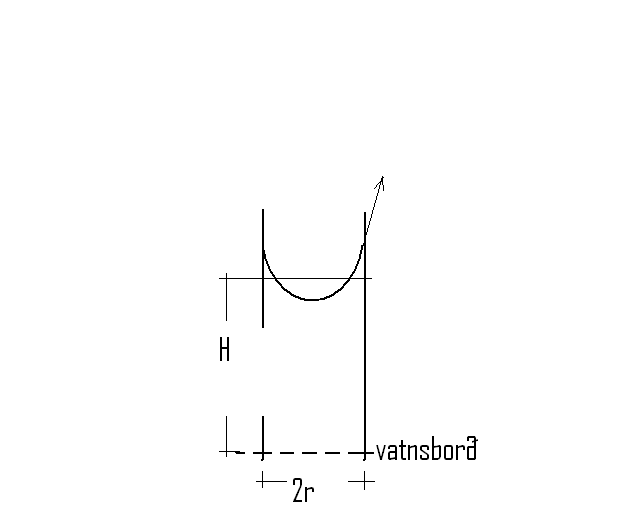

Háskóli Íslands – Umhverfis og byggingarverkfræðideild Húsagerð
Björn Marteinsson
3. 3. Raki, rakaflutningur og rakaþétting
3.1. 3.1 Almennt
Raki í byggingum og byggingarhlutum orsakast af fjórum megin ástæðum;
Byggingarraki
Loftraki
Úrkoma (snjór og slagregn)
Jarðvegsraki (grunnvatn)
Raki í byggingarefnum og byggingum getur haft óheppilegar aukaverkanir s.s. stuðlað að hraðara efnaniðurbroti heldur en væri í þurrum efnum og einnig valdið óhollustu, t.d. vegna rakaþéttingar. Það er því mikilvægt að hafa þekkingu til að geta metið rakaálag á byggingarhluta og byggingar, og geta kannað hvort rakaástand verði efnum og mannvirki óhagstætt.
Almennar líkingar og gildi;
Almenni gasfastinn; R=8314,3 J/(kmol∙K)
Yfirborðsspenna vatns; 78∙(1-0,0032∙)∙10-3 N/m
Gufuhleypni í lofti (DIN 52615); |image1| kg/(mPas)
3.2. 3.2 Raki í byggingarefnum og byggingum
Byggingarraki
Af náttúrulegum ástæðum, eða tengt framleiðsluferli sumra efna, þá innihalda efnin rakamagn sem getur verið hærra heldur en sem nemur jafnvægisraka (fjallað er um hugtakið jafnvægisraki í námsefni um efnisfræði) á notkunartíma. Þessi raki er nefndur byggingarraki (skilgreiningin ræðst af umhverfi, og er því háð aðstæðum hverju sinni). Dæmi um þetta er t.d. timbur sem iðulega er þurrkað niður í 18-20 % efnisraka (af þurri þyngd) áður en það er selt til notanda, en jafnvægisraki í notkun liggur á bilinu 6 – 18 %, háð notkunarsviði. Hliðstætt þá nemur umframraki í steypu á byggingartímanum iðulega nokkrum tugum lítra á hvern rúmmetra steypu.
Almennt er miðað við að halda byggingarefnum eins þurrum og kostur er á byggingartíma, og síðan gert ráð fyrir að byggingarefnin nái að losi sig við byggingarraka á notkunartíma þar til einhverju jafnvægi er náð, sem stjórnast af umhverfisáraun hverju sinni.
Loftraki
Mettunarraki lofts er ýmist gefinn upp sem gufuinnihald, kg/kg (eða kg/m3), eða rakaþrýstingur, Pa. Upplýsingar um mettunarraka má finna t.d. í Mollier-línuriti eða í töflum (sjá aftast í kaflanum). Mettunarrakaþrýsting lofts má einnig nálga samkvæmt jöfnu 3.1 sem er gefin upp í DIN 4108 TEIL 5 og sögð gilda á hitasviðinu –20 til 30 C.
|image2| , (Pa) (3.1)
þar sem a b n
0 30; 288,68 1,098 8,02
-20 0; 4,689 1,486 12,3
Hlutfallsraki innilofts (% HR) er háður rakamagni lofts (t.d. g/m3), eða hlutfallsþrýstingi vatnsgufu, og lofthita. Loftrakinn reiknast ætíð sem hlutfallstala af mettunarraka loftsins (sem er háður lofthita). Milli mettunarþrýstings (Pa) og mettunarraka (kg/m3) er beint samband eins og augljóst er af almenna gaslögmálinu, jafna 3.2
|image3| (3.2)
þar sem wsat mettunarraki, kg/m3
psat mettunarþrýstingur, Pa
MH2O mólmassi vatns, kg/kmol
R almenni gasfastinn, J/(kmol·K)
T hitastig, K
Hlutfallsraki lofts er skilgreindur eins og sýnt er í jöfnu 3.3 (nákvæm hliðstæða gildir ef í stað rakaþrýstings er notað samsvarandi rakamagn).
|image4| (3.3)
þar sem hlutfallsraki (hlutfallstala eða %)
pv rakaþrýstingur lofts, Pa
pv,sat mettunarþrýstingur vatnsgufu í lofti, Pa
T aflfræðilegt hitastig, K
Tafla 3.1 Rakaframleiðsla í íbúðarhúsnæði |
||
Lýsing |
Rakamagn kg /sólarhr. |
Heimild |
Íbúð (danskar tölur) : |
/1/ |
|
Matargerð, þvottar og frá íbúum |
15 |
|
Fjögurra manna fjölskylda (amerískar tölur) : |
/2/ |
|
Eldun (3 máltíðir á dag) |
0,9 |
|
Uppþvottur (3 x dag ??) |
0,45 |
|
Bað - sturta |
0,2 |
|
|
0,05 |
|
Þvottur (1 x viku) |
1,8 |
|
Þurrka þvott inni eða barkalaus þurrkari |
11,7 |
|
Þvo gólf (pr. 10 m2) |
1,3 |
|
Íbúar |
5,4 |
/1/ SBI Anvisning 76
/2/ Laaly, H.O. (1992) The Science and Technology of Traditional and Modern Roofing Systems, Laaly Scientific Publishing, Los Angeles, CA
Raki í innilofti er alltaf háður útiloftraka og rakagjöf til innilofts, en getur einnig tímabundið verið háður öðrum orsökum s.s. byggingarraka, leka vegna úrkomu eða frá lögnum og loks vegna jarðvegsraka. Útfrá upplýsingum um mettunarraka, háð lofthita, má auðveldlega sjá að fyrir sama rakamagn lofts lækkar loftraki með hækkandi hitastigi. Inniloft inniheldur það rakamagn sem loftið hafði sem útiloft, auk þess raka sem loftið tekur í sig þann tíma sem það er inni. Rakaviðbótin (fyrir hvern m3 innilofts) er því háð tveim atriðum þ.e. loftskiptum í húsinu (loftræsingu) og rakagjöf innanhúss, sjá töflu 3.1.
Rakamagn í innilofti má almennt reikna eins og jafna 3.4 sýnir, þar sem miðað er við að rakagjöf hefjist á tíma t=0;
|image5| (3.4)
þar sem wi rakamagn í innilofti, kg/m3
we rakamagn í útilofti, kg/m3
G rakabæting, kg/klst
n fjöldi loftskipta, 1/klst
V loftræst rými, m3
t tími, h
Af jöfnu 3.4 má sjá að með vaxandi tíma þá nálgast lausnin að verða stöðug; jafna 3.5
|image6| (3.5)
Til þess að taka samtímis tillit til áhrifa rakagjafar og loftskipta á inniloftraka þá er rakagjöfin iðulega gefin upp sem rakamagn á hvern rúmmetra í loftskiptum á tímaeiningu, g/(m3·klst). Rakamagn innilofts fæst þá sem loftraki útilofts að viðbættri rakagjöfinni. Í Svíþjóð er t.d. iðulega miðað við að slík rakagjöf í íbúðarhúsi sé 2-4g/m3, tölur frá Bandaríkjunum gefa svipaða niðurstöðu ef miðað er við ein loftskipti á klukkustund en tölur frá Danmörku gefa fyrir 1 loftskipti á klukkustund um 2 g/m3 fyrir 300m3 íbúð. Rakagjöf til innilofts, reiknað á loftskiptamagn, er hugsanlega minni hér á Reykjavíkur-svæðinu vegna ódýrrar hitunarorku og því hugsanlega mikillar loftræstingar.
Í staðlinum ÍST EN ISO 13788:2012 er sett fram tillaga að reiknislegri rakabætingu í húsum, reiknað á hvern rúmmetra í loftskiptum og háð útihita, sjá línurit 3.1.
Útfrá upplýsingum um lofthita og raka í útilofti, gefinn innihita og rakagjöf þá má reikna hvernig loftraki innilofts breytist eftir árstíðum, línurit 3.2. Í íbúðarhúsnæði er rakagjöf mismunandi eftir herbergjum og loftræsting getur einnig verið mismunandi. Þannig má t.d. búast við að tímabundið geti loftraki orðið mjög hár í baðherbergjum og loftraki í svefnherbergjum getur einnig orðið allhár að næturlagi ef lítið er loftræst.
{kind=link}
Línurit 3.1: Reiknisleg rakabæting í inniloft; (0-8 g/m3á rúmmetra í loftskiptum) (Heimild: ÍST EN ISO 13788:2012)
{kind=link}
Línurit 3.2: Hlutfallsraki lofts innanhúss í Reykjavík fyrir mismunandi rakabætingu (0-8 g/m3) og innihita 20°C. Útiaðstæður meðaltal áranna 1996-2004.
Almennt má þó miða við (og stutt af mælingum í húsum) að algengur loftraki í íbúðarhúsum hérlendis sé á bilinu 25-40 %HR að vetrarlagi, eða rakagjöf 2-4 g/loftræstan m3. Til viðmiðunar má nefna að ef rakinn fer yfir 40-45 % þegar kalt er úti þá verður rakaþétting innan á tvöföldu einangrunargleri. Að sumarlagi fer loftrakinn talsvert hærra að skaðlausu, eða upp í 50-60 %HR; þ.e. samsvarar rakabætingu í inniloft svo nemur allt að tæpum 4 g/m3.
Úrkoma og slagregn:
Úrkoma og slagregn eru oft beinn áhrifavaldur á efnisraka, jafnvel í veggjum, þar sem vatnsfilma á vatnsdrægu yfirborði mun ætið hafa áhrif á rakaástand efnisins.
Ótruflað slagregn á vegg er reiknað samkvæmt jöfnu 3.6.
Mynd 3.1 Slagregn
ur
uv
S=N*uv/ur (3.6)
þar sem S slagregnsmagn á lóðréttan flöt, kg/m2
N mæld úrkoma á láréttan flöt, kg/m2
uv vindhraði, m/s
ur fallhraði regndropa, m/s
Vitaskuld þarf að taka tillit til stefnu normals á veggyfirborð og vindáttar við ákvörðun slagregnmagns, þó svo þessi atriði komi ekki fram í jöfnu 3.6.
Fallhraði regndropa er háður stærð þeirra og er fyrir stærstu dropana gjarnan á bilinu 7-10 m/s. Í útreikningi á slagregnsmagni er oft miðað við ur=7 m/s.
Þegar vindur nálgast byggingu þá sveigir hann framhjá fyrirstöðunni (sjá umfjöllun um lofhreyfingar við byggingar) og regndroparnir fylgja loftinu í þessari hreyfingu að einhverju leyti, en hluti þeirra slöngvast áfram vegna hreyfitregðu. Það er því ósennilegt að regn sem lendir á fyrirstöðunni sé jafnmikið og útreiknað slagregnsmagn í ótrufluðu slagregni. Erlendis hafa verið gerðar mælingar á slagregni (m.a. Noregur, Svíþjóð, England) og í staðaluppkastinu prEN 13013-3:1997 er gerð tillaga varðandi reiknislega dreifingu slagregns á veggi, mynd 3.2, þar sem stuðullinn W er formstuðull slagregnsdreifingar á veggi (hliðstæða við formstuðul vindálags). Í staðaluppkastinu er grunngildi slagregns reiknað talsvert frábrugðið því sem sýnt er í jöfnu 3.6 (í staðaluppkastinu er tekið tillit til stefnuhorns, umhverfis o.f.l.). Þegar mynd 3.2 er skoðuð þá er áberandi að slagregn er iðulega meira efst á veggjum og síðan niður með úthornum, þessa mun gæta í rakainnihaldi veggjarins og viðhaldsþörf.
{kind=link}
Mynd 3.2 Slagregnsdreifing á veggi (heimild: prEN 13013-3:1997)
Jarðraki
Raki frá jarðvegi getur verið tilkominn vegna yfirborðsvatns (úrkomu) sem leitar að byggingu og hinsvegar raka frá grunnvatni. Háð tegund jarðvegs og frágangi byggingarhluta neðan jarðvegsyfirborðs getur rakinn verið í formi vatns sem; (i) liggur að yfirborði og veldur þá vatnsþrýstingi á yfirborði, (ii) rennur niður yfirborð, eða í formi raks jarðvegs sem liggur að yfirborði. Byggingarhlutar sem standa dýpra heldur en grunnvatnsyfirborð munu ávallt verða fyrir vatnsþrýstingi.
Jarðraki gerir að verkum að hlutfallsraki lofts í jarðvegi getur auðveldlega verið 100 %.
Til að draga úr jarðraka þarf að leiða frárennsli frá þaki, og almennt vatnsfráhrindandi yfirborðum, í fráveitu, halla jarðvegsyfirborði frá húsi og loks draga eftir mætti úr vatnsdrægni yfirborða í jörðu og ásamt því að tryggja dren frá byggingarhlutum í jörðu.
3.3. 3.3 Rakaflutningur
Drifkraftur sem knýr rakaflutning getur verið margskonar s.s. rakainnihald, rakaþrýstingur, hiti, póruþrýstingur, vindþrýstingur, þyngdarkraftur ofl.
Meginleiðir rakaflutningur eru eftirfarandi;
Rakaflæði
Rakastreymi
Hárpípuflutningur
Útsveim og varmasveim
og verður hér fjallað lauslega um hverja þessara leiða.
Rakaflæði
Rakaflæði á sér stað ef stigull í rakaþrýstingi eða rakainnihaldi er til staðar, jafna 3.7.
|image7| (3.7)
þar sem g þéttleiki rakaflutnings kg/m2s
D rakaflutningsstuðull
grad stigull drifkrafts rakaflutnings
Rakaflutningur í einni vídd er þá;
|image8| (3.8)
Augljós líkindi eru með jöfnu 3.7 og jöfnu Fourier’s fyrir varmaflutning (jafna 2. 1), rakaflutningur vegna flæðis er enda reiknaður á hliðstæðan máta og varmaflæði.
Jafna 3.7 gildir sérstaklega um rakaflutning í lofti, en getur einnig gilt fyrir rakaflutning í lofthluta efnis-loftblöndu (pórótt efni) en þá þarf að leiðrétta fyrir breyttu flutningsþversniði (og breyttri lengd flutningsleiðar). Slík leiðrétting er gerð með því að innfæra sérstakan efnisstuðul, , sjá síðar (jafna 3.16).
Drifkraftur fyrir rakaflæði er í eldri bókum gjarnan rakainnihald en í nýrri ritum, og uppkasti að staðli, er notaður rakaþrýstingur.
Rakastreymi í lofti
Þegar þrýstimunar gætir í lofti þá á sér stað lofstreymi, streymið getur átt upptök sín í þvinguðu streymi eða óþvinguðu sbr. umfjöllun um varmaflutning. Loftstreymi mun ávallt flytja með sér vatnsgufu ef hún er til staðar í loftinu. Þrýstimunur yfir byggingarhluta getur þannig þrýst (röku) lofti í gegnum leka byggingarhluta, og háð því hvort loftið hitnar upp eða kólnar á leið sinni í gegn þá geta áhrifin verið til útþornunar byggingarhlutans eða rakasöfnunar í byggingarhluta vegna rakaþéttingar. Nánar verður fjallað um þennan lið í kafla 4.
{kind=link}
Mynd 3.3 Hárpípa
Hárpípuflutningur
Kraftajafnvægi fyrir hárpípu (mynd 3.3), sem er í snertingu við vatnsyfirborð, gefur jöfnu 3.9;
·r2··g·H=2··r··cos
|image9| (3.9)
þar sem r radíus hárpípu, m
eðlisþéttleiki vökvans, kg/m3
H vökvahæð í pípunni, m
yfirborðspenna vökva, N/m
snertihorn vökva við pípu
Fyrir vatn og venjuleg byggingarefni er snertihornið almennt sett jafnt 0, en með vatnsverjandi efnum má auka snertihornið verulega og þannig lágmarka hárpípukrafta.
Í reynd eru hárpípur í efni af mismunandi vídd en ekki með eitt ákveðið þversnið hver um sig, því er einungis í undantekningartilvikum hægt að nota jöfnu 3.9 til að ákvarða ísogshæð vökva. Jafnframt er áhugvert að geta lagt mat á hraða ísogsins og magn vökva sem efnið tekur upp. Það er því almennt nauðsynlegt að mæla efniseiginleikana og notaðar eru jöfnur sem skilgreina má fyrir slík tilvik. Jafna 3.10 gefur vatnsísog frá fríu vatnsyfirborði;
|image10| (3.10)
þar sem G vatnsmagn, kg/m2
A ísogsstuðull vatnsmagns, kg/(m2·s)
t tími, s
Jafna 3.11 gefur vatnsdýpi í efninu;
|image11| (3.11)
þar sem x vatnshæð (eða dýpi), m
B ísogsstuðull vatnsdýpis, m/s
t tími, s
Vatnsdýpi vex stöðugt með tíma fyrir láréttar pórur, en í lóðréttum pórum gildir að vatnshæðin verður mest eins og jafna 3.9 sýnir.
Dæmi um gildi á stuðlunum A og B eru sýnd í töflu 3.2 fyrir nokkur efni.
Tafla 3.2 Ísogsstuðlar efna (heimild; Nevander og Elmarsson, 1994) |
|||
Efni |
Þéttleiki kg/m3 |
Stuðull fyrir ísogsmagn, A
|
Stuðull fyrir ísogsdýpi, B x 10-3m/s |
Tígulsteinn |
1700 |
0,37 |
1,4 |
Léttsteypa (sænsk) |
1900 |
0,08 |
0,4 |
Sementsmúr (sænskur) |
1900 |
0,03 |
0,5 |
Steypa v/s 0,3 (sænsk) |
0,010 |
0,14 |
|
Steypa v/s 0,5 (sænsk) |
0,020 |
0,17 |
|
Steypa v/s 0,7 (sænsk) |
0,028 |
0,25 |
|
Timbur || trefjum |
450 |
0,016 |
|
Timbur trefjar |
450 |
0,004 |
Rakþrýstingur verður lægri yfir sveigðu vatnsyfirborði heldur en flötu, þar sem yfirborðskraftar sem verka á vatnssameindirnar eru hærri í fyrrnefnda tilvikinu.
Jafna Kelvins segir til um samband pórustærðar og hlutfallsraka lofts yfir vatnsborði í slíkri póru (sem hlutfall af mettunarraka yfir sléttu yfirborði) , jafna 3.12;
|image12| (3.12)
(Thompson jafnan er |image13| )
þar sem hlutfallsraki lofts (hlutfallstala 0 – 1) =p/ps
p mettunarrakaþrýstingur í póru
ps mettunarrakaþrýstingur yfir sléttu yfirborði
yfirborðsspenna (hitastigsháð), N/m
Mw mólmassi vatns, kg/mól
r radíus póru, m
w eðlisþéttleiki vatns, kg/m3
R almenni gasfastinn R=8314,3 J/(kmol∙K)
T hitastig, K
Undirþrýstingur í póru er iðulega settur sem (jafna 3.13);
|image14| (3.13)
Jafna 3.13 ásamt 3.12 gefur (jafna 3.14);
|image15| (3.14)
Jafna 3.14 gefur samband milli undirþrýstings í póru og rakaþrýstings, en undirþrýstingur í póru (e: suction) hentar vel sem mat á drifkrafti rakaflutnings vegna hárpípukrafta.
Útsveim og varmasveim
Í þeim tilvikum sem pórustærð í efni er svipuð eða minni heldur en “frí” fjarlægð milli vatnssameinda, þá ákvarðast hreyfing sameinda ekki af innbyrðis áhrifum þeirra heldur áhrifum frá yfirborðum póranna. Sameindirnar hreyfast innbyrðis óháð, slíkur rakaflutningur nefnist útsveim (e: effusion).
Rakaflutningur á gufuformi í efni getur einnig orðið vegna áhrifa hitastiguls. Hitamunur í gasblöndu veldur aðskilnaði vegna mismunandi mólmassa gastegunda. Í röku lofti er sameindamassi vatnsgufu lægri heldur en mólmassi súrefnis og köfnunarefnis, vatnsgufan leitar því til heitari hlutans en súrefni og köfnunarefni til þess kaldari. Áhrif varmasveims (e: termodiffusion) verða helst merkjanleg í mjög póróttum efnum og við mikinn hitastigul.
3.4. 3.4 Útreikningur á rakaflutningi
Rakaflutningur verður helst eftir þrem leiðum eins og þegar hefur verið nefnt; flæði, streymi í lofti og hárpípukröftum. Iðulega er erfitt að skilja á milli flutnings annarsvegar sem flæði og hinsvegar streymi í lofti (hliðstætt vandamál og varðar varmaflutning), en þó er vitað að áhrifa vegna streymis í lofti verður fyrst merkjanlegt við háan loftraka (oft > 80 – 85 %).
Rakaflutningur í hárpípum á sér aðeins stað frá efni með lágan flutningsstuðul til efnis með háan flutningsstuðul (frá grófpóróttu efni til fínpóróttara).
Rakaflutningur verður hér reiknaður samkvæmt staðaluppkastinu TC 89 WI 29.3:2003. Tilvísanir í staðalinn verða hér styttar í TC89.
Í efni reiknast þéttleiki rakaflutnings, kg/(m2·s) eins og jafna 3.15 sýnir;
g=gv+gl (3.15)
þar sem gv rakaflutningur vegna flæðis (gp) og streymis í lofti (gc)
gl hárpípuflutningur
rakaflutningur vegna flæðis og streymis í lofti, gv, er skilgreint eins og jafna 3.16 sýnir;
|image16| (3.16)
þar sem () mótstöðutala vatnsgufuflæðis við rakainnihald , -
0(T) gufuhleypni í lofti með hitastig T, kg/(m·Pa·s)
pv/x stigull gufuþrýstings í lofti, Pa
ga þéttleiki loftflutnings, kg/(m2,s)
a þéttleiki lofts, kg/m3
pv hlutfallsþrýstingur vatnsgufu, Pa
Gufuhleypni í lofti, er eins og jafna 3.17 sýnir (DIN 52615);
|image18| kg/(mPas) (3.17)
Í fræðiritum (þetta var og er jafnvel víða venja enn) eru stuðlarnir við drifkraft rakaflæðis teknir saman í eina stærð, sbr. jöfnu 3.7. Stuðullinn er oft nefndur Dx þar sem lágmerkið skýrir hvaða drifkraftur er notaður; oft w fyrir rakainnihald og p fyrir rakaþrýsting, sem dæmi um þetta má nefna gildið p; p=0/. Ókostur aðferðarinnar er sá að rakaflæðistuðullinn D er augljóslega háður drifkraftinum. Til er fjöldinn allur af mismunandi efnisgildum fyrir útreikning á rakaflutningi, umreiknistuðla fyrir öll algengustu gildi er t.d. að finna í Rb-blaðinu Rb (I3).001 ”Vindþéttilög í húsbyggingum-efniseiginleikar og frágangur”. Kosturinn við framsetningu staðaluppkastsins er að stuðullinn er hrein hlutfallstala sem er efnisháð, og einungis þarf að velja stuðulinn þannig að hann passi fyrir valinn drifkraft.
Fyrir yfirborðslög (yfirborðsmótstöður, málningar o.f.l.) þá er jafngilda formið fyrir jöfnu 3.16 , eins og jafna 3.18 sýnir;
|image19| (3.18)
Af samanburði milli jafnanna 3.16 og 3.18 sést að jafngildisþykkt loftlags, sd, fæst sem ; sd=·d, þar sem d er þykkt efnislags. Þá gildir almennt að mótstaða efnislags, eða yfirborðs, fæst sem (jafna 3.19);
Zp=sd/0=d·/0 (3.19)
Efnisgildi til útreikninga á rakaflutningi má finna t.d. í staðlinum ÍST EN 12524:2000, tækniblaðinu NBI 573.430 og handbókum eftir S. Geving og J. V. Thue (2002), Nevander og Elmarsson (1994). Rakaflæðimótstaða efna er alltaf háð hitastigi (sem leiðrétt er fyrir með 0stuðlinum í jöfnum 3.14 og 3.16) og iðulega einnig rakainnihaldi efna, þar sem rakaflæðimótstaðan fellur almennt með hækkandi efnisraka.
Efnisframleiðendur og efnissalar, og einnig eldri rit, gefa stundum upp rakaflutningsmótstöðuna Z í stað sd gildis eins og nú tíðkast. Þá þarf þó að skoða vandlega hvaða eining er á uppgefnu Z-gildinu (oft GPasm2/kg) og taka tillit til þess í útreikningunum.
Jafngildisþykkt yfirborðsloftlags (mótstaða við yfirborð), sd,s, er sýnd í töflu 3.3.
Tafla 3.3 Jafngildisþykkt yfirborðsloftlags (e: boundary layer) (heimild: TC 89 )
Yfirborð inni sd,si (m)
Stefna varmaflutnings
Lárétt 0,008
Upp 0,004
Niður 0,03
Yfirborð úti (háð vindhraða v) sd,se (m)
Samantekt fyrir nokkur algeng byggingarefni er í töflu 3. 4 og fyrir algeng efnislög í töflu 3.5.
Tafla 3.4 Rakaflæð imótstaða efna, (heimild: NBI 573.430, o.fl.) |
|||||
Efni |
Þéttleiki (kg/m:s up:3) |
Rakaflæði mótstaða, fyrir m ismunandi hlut fallsraka (% HR) |
|||
35 - 70 |
70 - 80 |
80 - 90 |
90 - 95 |
||
Steinull |
15 |
1,2 – 1,8 |
|||
Steinull |
200 |
2,2 – 3,3 |
|||
Fr auðplast, þanið |
20 |
19-29 |
19-29 |
19-29 |
19-29 |
Fr auðplast, þanið |
30 |
98 |
|||
Fr auðplast, sprautað |
20-60 |
150 |
|||
Steypa v/s 0,5 (norsk) |
131-195 |
82-131 |
27-82 |
9-27 |
|
Fura – þvert á tre fjastefnu |
29-130 |
13-51 |
7,4-26 |
||
K rossviður |
29-130 |
14-51 |
8-25 |
||
OSB plata |
650 |
49 |
|||
S pónaplata |
635 |
37 |
16 |
||
Trétr efjaplata |
900 |
102 |
|||
EPDM dúkefni |
60000 |
||||
PVC |
40000 |
Tafla 3.5 Rakaflæðimótstaða efnislaga, sd(heimild: NBI 573.430) |
||
Efni |
Þykkt |
Jafngildisþykkt loftlags, sd (m) |
Textil teppi- með latex bakhlið |
3,3-4,1 |
|
Linoleum, HR 35-70% |
2,5 |
10 |
Linoleum, HR 70-80% |
2,5 |
5,3 |
Vinyl gólfdúkur, mjög lokaður |
254 |
|
Akryllatex málning |
0,05 |
0,14-0,53 |
Alkydmálning, 2umf., mött vegg- og loftamálning |
2,5-5 |
|
Epoxy gólfmálning-tveggja þátta, 2umf. |
7,6-14 |
|
Polyethylen (PE) rakavarnarlag |
0,15 |
70 |
0,20 |
90 |
|
Tjörupappi (polyester vefur) |
100 |
|
PVC þakdúkur |
1,4 |
19 |
Polyisobutylen (PIB) þakdúkur |
1,5 |
390 |
Í eftirfarandi verður litið framhjá áhrifum loftflutnings í efni og hárpípuflutnings á rakaflutning (nema að því leyti sem þessi áhrif eru innifalinn í viðeigandi efnisgildum). Útreikningar taka hér einvörðu tillit til rakaflæðis.
Rakaflutningur, rakaástand og rakaþétting
Við stöðug hita- og rakaskilyrði í umhverfi byggingarhluta þá næst rakajafnvægi í byggingarhluta þegar rakaástandið ákvarðast af rakaflæði, ef aðstæður eru þannig að rakaþétting á sér ekki stað. Mettunarrakaþrýstingur, jafna 3.1 (og mettunarrakamagn, jafna 3.2) í hverju sniði ræðst af hitastigi þar, en hitafall í einsleitu efnislagi er línulegt við stöðug skilyrði eins og fjallað var um í kafla 2. Rakaþrýstingur í sniðinu, jafna 3.16, verður því aðeins línulegur að rakaflæðimótstaðan Z (jafna 3.19) sé óháð hitastigi og efnisraka, mettunarrakaaferillinn verður hinsvegar alltaf aðeins sveigður þar sem samband mettunarraka og hitastigs er ekki línulegt.
Þrátt fyrir að rakaflæðimótstaðan sé nánast alltaf hita- og rakaháð þá er venja í útreikningum við stöðug skilyrði að líta framhjá þessu, til einföldunar er gert ráð fyrir að bæði rakaþrýstingur og mettunarrakaþrýstingur í einsleitu efnislagi breytist línulega.
Mettunarrakaþrýstingur í efnislagi er því ákvarðaður útfrá hitastigi á yfirborðum efnislags og rakaþrýstingur í efninu útfrá rakaþrýstingi á yfirborðum. Reikningur rakaþrýstings í byggingarhluta sem samsettur er úr mörgum efnislögum er gerður hliðstætt og gert var fyrir hitastigsdreifingu í kafla 2, reiknuð er mótstöðutala rakaflæðis lag fyrir lag og rakaþrýstingur reiknaður hlutfallslega útfrá umhverfisaðstæðum. Í þeim tilvikum sem reiknaður rakaþrýstingur er hærri heldur en mettunarþrýstingur í sniði þá á sér stað rakaþétting, annars ekki. Skoða þarf tvö tilvik (mynd 3.3);
{kind=link}
Mynd 3.3 Raka- og mettunarrakaþrýstingur í sniði
Engin rakaþétting
Rakaflutning, á flatar- og tímaeiningu, í gegnum byggingarhluta má ákvarða í samræmi við (fyrri hluta) jöfnu 3.16, sem nú er umskrifuð eins og jafna 3.20 sýnir;
|image21| (3.20)
þar sem g rakaflutningur frá 1 til 2, kg/(m2·s)
ZT heildarmótstaða gegn rakaflæði, m2·s·Pa/kg
p1, p2 rakaþrýstingur beggja vegna við byggingarhluta, Pa
Rakaþétting
Rakaþéttingin er til einföldunar öll reiknuð í “fyrsta kalda sniði” í byggingarhluta (á mynd 3.3 er það snið n+2, þegar rakaflutningur er frá 1 til 2, og mettunarraki þar er pcond). Í því tilviki að rakaþétting reiknast verða í tveim eða fleiri sniðum, þá þarf að setja rakaþrýsting í innsta sniðinu jafnt og mettunarrakaþrýsting, og endurreikna dæmið frá þeim punkti og svo koll af kolli fyrir hvert snið utar þar sem rakþrýstingur fer yfir mettunarraka.
Reiknaðar eru mótstöður innan- og utan við þéttingarsniðið, Zinn og Zut, og samsvarandi rakaflutningur, sjá mynd 3.3;
|image22| (3.21)
|image23| (3.22)
guppsafnað= ginn - gút (3.23)
Þegar útreikningar sýna að rakaþétting eigi sér stað þá þarf að meta yfir hversu langan tíma þetta ástand varir og athuga svo hvort byggingarhlutinn geti losað sig við rakann þegar aðstæður breytast (samsvarandi reikningar og í lið II.), það þarf þannig að leggja mat á hvort rakauppsöfnun verði viðvarandi eða hvort um árstíðasveiflu sé að ræða. Þegar reiknuð er útþornun þá þarf vitaskuld að reikna rakaþrýsting miðað við rakaþéttingu í þéttingarsniðinu og með ítrun áætla hvort útþornun eigi sér stað og þá hversu langan tíma hún tekur.
Það er þó ekki einungis rakaþétting sem er áhugaverð heldur einnig sá tími þegar hár loftraki helst í einstökum sniðum byggingarhluta. Hætta á mygluvexti er metin útfrá rakaástandi og á sama tíma hitaástandi yfir skilgreindum mörkum, og talinn saman tími sem skilyrðin eru uppfyllt.
Í Byggingarreglugerð, kafla 10.5, er fjallað almennt um raka (m.a. grein 10.5.1);
10.5.1. gr.
Markmið.
Mannvirki skulu þannig hönnuð og byggð að vatn eða raki geti ekki valdið skaða á mannvirki í heild eða einstökum hlutum þess eða skapað aðstæður sem valdið geta óþægindum, slysum eða verið hættulegar heilsu manna, s.s. vegna myndunar myglu eða varasamra örvera.
Tryggja skal að grunnvatn, yfirborðsvatn, úrkoma, s.s. regn, slagregn, snjór eða krapi, raki í jarðvegi, neysluvatn, loftraki, byggingarraki eða þéttivatn geti hvorki skaðað mannvirki eða einstaka hluta þess, né rýrt eðlileg hollustuskilyrði innandyra.
Orðalagið “skaða á mannvirki” er ekki skilgreint sérstaklega, og er því á verksviði hönnuðar hverju sinni að meta hvort t.d. rakauppsöfnun, tímabundin eða varanleg, sé skaðleg. Í þessu sambandi er nauðsynlegt að leggja mat á áreiðanleika þeirra aðferða sem beitt er til að meta rakaástand í byggingarhluta á hönnunarstigi bygginga.
Í hefðbundnum útreikningum, eins og hér er fjallað um þarf að hafa eftirfarandi í huga;
Útreikningar byggja á einfölduðum reiknilíkönum.
Upplýsingar um efniseiginleika (og rakaþol) eru iðulega af skornum skammti.
Upplýsingar um umhverfisaðstæður (raka og hita) eru háðar óvissu.
Hæfni efna til að taka upp raka (tímabundið) án þess að skemmdir hljótist af.
Það er því ástæða að hafa í huga að reiknislegt mat á rakaástandi er fremur gæðamat heldur en fræðilegt mat og því eðlilegt að halda sig frekar öruggu megin þegar niðurstöður eru metnar. Í þessu sambandi er eðlilegt að miða við að öryggi valinnar uppbyggingar sé nægjanlegt, t.d. að reiknuð útþornun sé umtalsvert meiri heldur en reiknuð rakauppsöfnun.
Reiknaður rakaflutningur í byggingarhluta og metin hætta á rakaþéttingu
Dæmi:
Steyptur veggur einangraður að innan með 100 mm frauðplasti, múraður að innan með 20 mm sementsmúr, en að utan með 25 mm sementsmúr. Veggurinn málaður að innan með alkydmálningu (2 umf) og akryllatex að utan (2 umf). – Efnisgildi fyrir rakaeiginleika tekin úr töflum 3.3 og 3.4, einangrunargildi samsvarandi og í kafla 2.
Reiknað er hitastig og rakaástand í sniði fyrir aðstæður; inni 22 °C / 45 %HR, úti -2 °C / 80 %HR (undir meðallagi fyrir janúar í Reykjavík).
Útreikningar og niðurstöður í töflu;
{kind=link}
Niðurstöður sýna að við framangreindar aðstæður verður rakaþétting í veggnum svo nemur 0,0070 g/(m2,h), eða 5 g/m2, mánuð – rakaþéttingin er óveruleg þegar tekið er tillit til mögulegrar rakaupptöku veggjarins, en athuga ber að hitastig innra byrðis steypunnar er undir frostmarki og þéttingin mun því byggjast upp sem klakabrynja. Aðstæðurnar sem um ræðir munu þó sjaldan standa nema stuttan tíma í senn og þegar veggyfirborðið þiðnar þá getur steypan sennilega tekið við rakanum án vandkvæða.
{kind=link}
Línurit 3.3 Mollier línurit fyrir rakt loft
Tafla 3.6 M ettuna rraki; þrýs tingur og ra kamagn í lofti, háð hita stigi. Fyrir hi tastig undir fros tmarki er miðað við að stæður yfir ís. |
||||||||||
Hiti (°C) |
Þrýst. (Pa) |
Raki
3) |
Hiti (°C) |
Þrýst. (Pa) |
Raki
3) |
Hiti (°C) |
Þrýst. (Pa) |
Raki
3) |
||
30 |
4245 |
30,36 |
10 |
1228 |
9,40 |
-10 |
260 |
2,14 |
||
29 |
4005 |
28,78 |
9 |
1147 |
8,83 |
-11 |
238 |
1,97 |
||
28 |
3780 |
27,24 |
8 |
1072 |
8,28 |
-12 |
225 |
1,81 |
||
27 |
3565 |
25,80 |
7 |
1001 |
7,76 |
-13 |
199 |
1,66 |
||
26 |
3360 |
24,40 |
6 |
935 |
7,27 |
-14 |
181 |
1,52 |
||
25 |
3170 |
23,04 |
5 |
872 |
6,80 |
-15 |
166 |
1,39 |
||
24 |
2985 |
21,80 |
4 |
813 |
6,37 |
-16 |
151 |
1,27 |
||
23 |
2815 |
20,60 |
3 |
757 |
5,96 |
-17 |
137 |
1,16 |
||
22 |
2640 |
19,45 |
2 |
705 |
5,57 |
-18 |
125 |
1,06 |
||
21 |
2485 |
18,35 |
1 |
656 |
5,20 |
-19 |
114 |
0,97 |
||
20 |
2335 |
17,29 |
0 |
611 |
4,84 |
-20 |
104 |
0,88 |
||
19 |
2195 |
16,33 |
-1 |
563 |
4,48 |
-21 |
94 |
0,80 |
||
18 |
2060 |
15,40 |
-2 |
517 |
4,13 |
-22 |
85 |
0,73 |
||
17 |
1935 |
14,50 |
-3 |
475 |
3,82 |
-23 |
78 |
0,67 |
||
16 |
1818 |
13,65 |
-4 |
437 |
3,52 |
-24 |
71 |
0,61 |
||
15 |
1703 |
12,82 |
-5 |
402 |
3,24 |
-25 |
64 |
0,55 |
||
14 |
1596 |
12,09 |
-6 |
368 |
2,99 |
-26 |
58 |
0,50 |
||
13 |
1496 |
11,37 |
-7 |
338 |
2,75 |
-27 |
52 |
0,46 |
||
12 |
1400 |
10,68 |
-8 |
310 |
2,53 |
-28 |
47 |
0,41 |
||
11 |
1311 |
10,03 |
-9 |
284 |
2,33 |
-29 |
42 |
0,38 |
||
-30 |
37 |
0,34 |
3.5. Heimildir og ítarefni
Björn Marteinsson (1999) ” Loftræsing í íbúðarhúsum”, erindi á ráðstefnu Lagnafélags Íslands, birt í ráðstefnuriti
DIN (1981) Wärmeschutz im Hochbau DIN 4108
DIN (1987) Bestimmung der Wasserdampfdurchlässigkeit von Bau- und Dämmstoffen DIN 52615
S. Geving og J. V. Thue (2002) Fukt i bygninger, Norges byggforskningsinstitutt, Håndbok 50, Oslo
E. Hagemann (1988), Byggematerialer – grundbog, polyteknisk Forlag, København
ÍST EN 12524:2000 Building materials and products - Hygrothermal properties - tabulated design values
Jón Sigurjónsson (1983) Rb (I3).001 ”Vindþéttilög í húsbyggingum-efniseiginleikar og frágangur”, Rb-blað, Rannsóknastofnun byggingariðnaðarins, Keldnaholti
NBI (2003) Materialdata for vanndamptransport, Byggforskserien Byggdetaljer 573.430 Oslo,
L. E. Nevander, B. Elmarsson (1994) Fukthandboken, Svensk byggtjänst, Stockholm
Óli Hilmar Jónsson (1982) Raki í húsum, sérrit 46, Rannsóknastofnun byggingariðnaðarins, Keldnaholti
ISO (1997) Draft prEN 13013-3:1997 Hygrothermal performance of buildings – climatic data-part 3: calculation of driving rain index for vertical surfaces from hourly wind and rain data
ÍST EN ISO (2012) 13788:2012 Hygrothermal performance of building components and building elements - Internal surface temperature to avoid critical surface humidity and interstitial condensation – Calculation method
K. Sandin (1987) Fukttillstånd i autoklaverade lättbetongväggar - Fältmätning av slagregnets och ytskiktets inverkan, LTH, Byggnadsmateriallära, Rapport TVBM 3026, Lund
TC 89 WI 29.3:2003 (2003-04) Hygrothermal performance of building components and building elements – Assessment of moisture transfer by numerical simulation
Ýmsir (1997), Husbygningsteknikk – Bind 1, Institutt for husbygningsteknikk, Norges tekniske høgskole, Universitetet i Trondheim, Norge
3.19